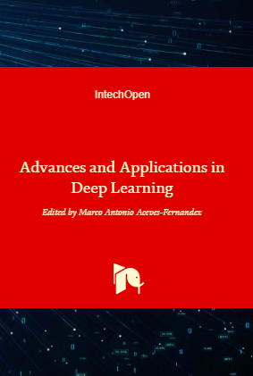

Publications
- Prof. Joongheon Kim's Publication List is presented in the official website of AI and Mobility Laboratory at Korea University.
- Complete Publication List: [Journals and Magazines][Conferences][Books and Book Chapters][국문저서,저널,학술대회]
- [Google Scholar][DBLP][ResearchGate]
Book Chapters
- S. Jung and J. Kim, "Deep Learning Recipes for Connected and Autonomous Vehicles (CAV) Coordination and Control," Deep Learning and Its Applications for Vehicle Networks, CRC Press Taylor and Francis Group, Month Year. (Editor: F. Hu)
- S. Jung and J. Kim, "Stochastic Decision Making under Uncertainty using Deep Learning," Decision Making, IntechOpen, Month Year. (Editor: F.P.G. Marquez)
- S. Park, D. Kim, and J. Kim, "Dynamic Decision-Making for Stabilized Deep Learning Software Platforms," Advances and Applications in Deep Learning, IntechOpen, September 2020. (Editor: M.A. Aceves-Fernandez)
- A.F. Molisch, M. Ji, J. Kim, D. Burghal, and A.S. Tehrani, "Device-to-Device Communications," Towards 5G: Applications, Requirements and Candidate Technologies, Wiley, January 2017. (Editors: R. Vannithamby, S. Talwar)
- J. Kim, "Millimeter-Wave (mmWave) Medium Access Control: A Survey," Opportunities in 5G Networks: A Research and Development Perspective, CRC Press Taylor and Francis Group, April 2016. (Editor: F. Hu)
- J. Kim, "Millimeter-Wave (mmWave) Radio Propagation Characteristics," Opportunities in 5G Networks: A Research and Development Perspective, CRC Press Taylor and Francis Group, April 2016. (Editor: F. Hu)
- J. Kim, E. Kim, W. Lee, D. Kim, J. Choi, J. Jung, and C.K. Shin, "Weighted Localized Clustering: A Coverage-Aware Reader Collision Arbitration Protocol in RFID Networks," Handbook on Mobile and Ubiquitous Computing: Status and Perspective, CRC Press Taylor and Francis Group, October 2012. (Editors: L.T. Yang, E. Syukur, S.W. Loke)
- J. Kim, W. Lee, E. Kim, and T.K. Shih, "Coverage-Time Optimized Dynamic Clustering for Two-Tiered WM2Nets," Wireless Mesh Networking, McGraw-Hill Professional, August 2008. (Editor: G. Aggelou)
Journals and Magazines: IEEE, ACM, and Selected Top-Tier
- (WIP) U. Meteriz, N.F. Yildiran, J. Kim, and D. Mohaisen, "Understanding the Potential Risks of Sharing Elevation Information on Fitness Applications,"
IEEE Transactions on Mobile Computing . - (WIP) S. Jung, M. Levorato, and J. Kim, "Truthful and Distributed Mobile Charging for Sustainable UAV-Assisted Cybertwin,"
IEEE Transactions on Vehicular Technology . - (WIP) H. Lee, S. Jung, and J. Kim, "Neural Architectural Truthful Myerson Auction for Aerial Big-Data Delivery Platforms," IEEE Access.
- (WIP) W.J. Yun, Y.J. Ha, S. Jung, D. Mohaisen, J. Kim, and J.-H. Kim, "Multi-Agent Deep Reinforcement Autonomous Drone Mobility Learning for Smart City Services,"
IEEE Aerospace and Electronic Systems Magazine . - (Review) W.J. Yun, J. Kim, M. Shin, S. Jung, J. Ko, H.-C. Lee, and K. Lee, "On Exploiting Deep Reinforcement Learning for Dynamic Propofol Infusion Control in Anesthesia: A Feasibility Study with a 3,000-subject Dataset," IEEE Journal of Translational Engineering in Health and Medicine.
- (Review) M. Choi, W.J. Yun, and J. Kim, "Delay-Sensitive and Power-Efficient Quality Control of Dynamic Video Streaming using Adaptive Super-Resolution,"
IEEE Transactions on Mobile Computing . - (Review) K. Kim, J.-H. Lee, S. Jung, J. Kim, and J.-H. Kim, "Stabilized Target Recognition Performance Maximization using Adaptive LEO Spaceborne SAR Image Processing," IEEE Transactions on Aerospace and Electronic Systems.
- (Review) S. Park, M. Choi, W.-Y. Shin, and J. Kim, "Joint Mobile Charging and Coverage-Time Extension for Unmanned Aerial Vehicles," IEEE Access.
- (Review) M. Shin, W.J. Yun, D. Mohaisen, J.-K. Kim, and J. Kim, "Gaussian Random Trajectory Guided Hierarchical Reinforcement Learning," IEEE Transactions on Cybernetics.
- (Review) S. Jung, M. Levorato, J. Kim, and J.-H. Kim, "Self-Adaptive Learning Outsourcing Decision Making for Edge-Assisted Aerial Surveillance Services," IEEE Transactions on Services Computing.
- (Review) S. Jung, D. Mohaisen, J. Kim, and J.-H. Kim, "Truthful and Performance-Optimal Computations Outsourcing for Surveillance Analytics Platforms via Learning-based Auctions,"
IEEE Transactions on Vehicular Technology . - (Review) M. Shin, W.J. Yun, D. Mohaisen, K. Lee, and J. Kim, "Hierarchical Deep Reinforcement Learning-based Propofol Infusion Assistant Framework in Anesthesia," IEEE Transactions on Neural Networks and Learning Systems.
- (Review) W.J. Yun, S. Park, J. Kim, M. Shin, S. Jung, D. Mohaisen, and J.-H. Kim, "Reliability and Security for Intelligent Wireless Sensing and Control Systems (Double Blind Review)," IEEE Transactions on Industrial Informatics.
- (With Associate Editor) S. Jung, J. Kim, M. Levorato, C. Cordeiro, and J.-H. Kim, "Infrastructure-Assisted On-Driving Experience Sharing for Millimeter-Wave Connected Vehicles,"
IEEE Transactions on Vehicular Technology . - (Under Major Revision) S. Jung, M. Shin, J. Kim, and W. Lee, "Millimeter-Wave Beam Trading for Smart Ocean IoT Networks via Learning-Assisted Auction," IEEE Access.
- (Under Major Revision) W.J. Yun, D. Kwon, M. Choi, J. Kim, G. Caire, and A.F. Molisch, "Quality-Aware Deep Reinforcement Learning for Streaming in Infrastructure-Assisted Connected Vehicles,"
IEEE Transactions on Vehicular Technology . - (Under Major Revision) W.J. Yun, S. Park, J. Kim, and D. Mohaisen, "Self-Configurable Stabilized Real-Time Detection Learning for Autonomous Driving Applications," IEEE Transactions on Intelligent Transportation Systems.
- N.-N. Dao, T. Phan, U. Sa'ad, J. Kim, T. Bauschert, D.-T. Do, and S. Cho, "Securing Heterogeneous IoT with Intelligent DDoS Attack Behavior Learning," IEEE Systems Journal (Early Access).
- J. Yi, S. Kim, J. Kim, and S. Choi, "Supremo: Cloud-Assisted Low-Latency Super-Resolution in Mobile Devices,"
IEEE Transactions on Mobile Computing (Early Access). - E. Boo, J. Kim, and J. Ko, "LiteZKP: Lightening Zero-Knowledge Proof-based Blockchains for IoT and Edge Platforms," IEEE Systems Journal (Early Access).
- S. Jung, J. Kim, and J.-H. Kim, "Intelligent Active Queue Management for Stabilized QoS Guarantees in 5G Mobile Networks," IEEE Systems Journal (Early Access).
- A. Malik, J. Kim, K.S. Kim, and W.-Y. Shin, "A Personalized Preference Learning Framework for Caching in Mobile Networks,"
IEEE Transactions on Mobile Computing , 20(6):2124-2139, June 2021. - S. Jung, W.J. Yun, M. Shin, J. Kim, and J.-H. Kim, "Orchestrated Scheduling and Multi-Agent Deep Reinforcement Learning for Cloud-Assisted Multi-UAV Charging Systems,"
IEEE Transactions on Vehicular Technology , 70(6):ppp-ppp, June 2021. - J. Park, S. Samarakoon, A. Elgabli, J. Kim, M. Bennis, S.-L. Kim, and M. Debbah, "Communication-Efficient and Distributed Learning Over Wireless Networks: Principles and Applications," Proceedings of the IEEE, 109(5):796-819, May 2021.
- M. Choi, A.F. Molisch, D.-J. Han, D. Kim, J. Kim, and J. Moon, "Probabilistic Caching and Dynamic Delivery Policies for Categorized Contents and Consecutive User Demands,"
IEEE Transactions on Wireless Communications , 20(4):2685-2699, April 2021. - D. Kim, S. Park, J. Kim, J.y. Bang, and S. Jung, "Stabilized Adaptive Sampling Control for Reliable Real-Time Learning-based Surveillance Systems,"
IEEE/KICS Journal of Communications and Networks , 23(2):129-137, April 2021. - M. Choi, M. Shin, and J. Kim, "Dynamic Video Delivery using Deep Reinforcement Learning for Device-to-Device Underlaid Cache-Enabled Internet-of-Vehicle Networks,"
IEEE/KICS Journal of Communications and Networks , 23(2):117-128, April 2021. - D. Kim, D. Kwon, L. Park, J. Kim, and S. Cho, "Multiscale LSTM-Based Deep Learning for Very-Short-Term Photovoltaic Power Generation Forecasting in Smart City Energy Management," IEEE Systems Journal, 15(1):346-354, March 2021.
- M. Choi, A.F. Molisch, and J. Kim, "Joint Distributed Link Scheduling and Power Allocation for Content Delivery in Wireless Caching Networks,"
IEEE Transactions on Wireless Communications , 19(12):7810-7824, December 2020. - D. Kwon, J. Jeon, S. Park, J. Kim, and S. Cho, "Multiagent DDPG-Based Deep Learning for Smart Ocean Federated Learning IoT Networks,"
IEEE Internet of Things Journal , 7(10):9895-9903, October 2020. - D. Kwon, J. Kim, D. Mohaisen, and W. Lee, "Self-Adaptive Power Control with Deep Reinforcement Learning for Millimeter-Wave Internet-of-Vehicles Video Caching,"
IEEE/KICS Journal of Communications and Networks , 22(4):326-337, August 2020. - M. Choi and J. Kim, "Blind Signal Classification Analysis and Impact on User Pairing and Power Allocation in Nonorthogonal Multiple Access," IEEE Access, 8:100916-100929, June 2020.
- M. Shin, D.-H. Choi, and J. Kim, "Cooperative Management for PV/ESS-Enabled Electric-Vehicle Charging Stations: A Multiagent Deep Reinforcement Learning Approach," IEEE Transactions on Industrial Informatics, 16(5):3493-3503, May 2020.
- M. Saad, J. Choi, D. Nyang, J. Kim, and A. Mohaisen, "Towards Characterizing Blockchain-based Cryptocurrencies for Highly-Accurate Predictions," IEEE Systems Journal, 14(1):321-332, March 2020.
(IEEE Systems Journal Best Paper Award, Top 7 among 793 accepted papers in 2019: 0.88%) - S. Han, J.-W. Choi, and J. Kim, "Numerical Approximation of Millimeter-Wave Frequency Sharing between Cellular Systems and Fixed Service Systems,"
IEEE/KICS Journal of Communications and Networks , 22(1):37-45, February 2020. - M. Choi, . No, M. Ji, and J. Kim, "Markov Decision Policies for Dynamic Video Delivery in Wireless Caching Networks,"
IEEE Transactions on Wireless Communications , 18(12):5705-5718, December 2019.(Reviewed by IEEE Communications Society MMTC Communications - Review, 11(3)5-6, June 2020 (Cache-Assisted Dynamic Video Delivery for Mobile Users, Edited by Cong Shen), Link) - M. Choi, J. Kim, and J. Moon, "Dynamic Power Allocation and User Scheduling for Power-Efficient and Delay-Constrained Multiple Access Networks,"
IEEE Transactions on Wireless Communications , 18(10):4846-4858, October 2019. - L. Park, C. Lee, J. Kim, A. Mohaisen, and S. Cho, "Two-Stage IoT Device Scheduling with Dynamic Programming for Energy Internet Systems,"
IEEE Internet of Things Journal , 6(5):8782-8791, October 2019. - M. Choi, D. Yoon, and J. Kim, "Blind Signal Classification for Non-Orthogonal Multiple Access in Vehicular Networks,"
IEEE Transactions on Vehicular Technology , 68(10):9722-9734, October 2019. - W. Lee, T. Kang, J.-J. Lee, K. Han, J. Kim, and M. Pedram, "TEI-ULP: Exploiting Body Biasing to Improve the TEI-Aware Ultra-Low Power Methods," IEEE Transactions on Computer-Aided Design of Integrated Circuits and Systems, 38(9):1758-1770, September 2019.
- J. Koo, J. Yi, J. Kim, M.A. Hoque, and S. Choi, "Seamless Dynamic Adaptive Streaming in LTE/Wi-Fi Integrated Network under Smartphone Resource Constraints,"
IEEE Transactions on Mobile Computing , 18(7):1647-1660, July 2019. - M. Shin, J. Kim, and M. Levorato, "Auction-Based Charging Scheduling With Deep Learning Framework for Multi-Drone Networks,"
IEEE Transactions on Vehicular Technology , 68(5):4235-4248, May 2019. - L. Park, S. Jeong, D.S. Lakew, J. Kim, and S. Cho, "New Challenges of Wireless Power Transfer and Secured Billing for Internet of Electric Vehicles,"
IEEE Communications Magazine , 57(3):118-124, March 2019. - L. Park, S. Jeong, J. Kim, and S. Cho, "Joint Geometric Unsupervised Learning and Truthful Auction for Local Energy Market," IEEE Transactions on Industrial Electronics, 66(2):1499-1508, February 2019.
- S. Jeong, W. Na, J. Kim, and S. Cho, "Internet of Things for Smart Manufacturing System: Trust Issues in Resource Allocation,"
IEEE Internet of Things Journal , 5(6):4418-4427, December 2018. - N.-N. Dao, D.-N. Vu, W. Na, J. Kim, and S. Cho, "SGCO: Stabilized Green Crosshaul Orchestration for Dense IoT Offloading Services,"
IEEE Journal on Selected Areas in Communications , 36(11):2538-2548, November 2018. - M. Choi, J. Kim, and J. Moon, "Wireless Video Caching and Dynamic Streaming Under Differentiated Quality Requirements,"
IEEE Journal on Selected Areas in Communications , 36(6):1245-1257, June 2018. - S. Ahn, J. Kim, E. Lim, and S. Kang, "Soft Memory Box: A Virtual Shared Memory Framework for Fast Deep Neural Network Training in Distributed High Performance Computing," IEEE Access, 6:26493-26504, May 2018.
- M. Choi, J. Kim, and J. Moon, "Adaptive Detector Selection for Queue-Stable Word Error Rate Minimization in Connected Vehicle Receiver Design,"
IEEE Transactions on Vehicular Technology , 67(4):3635-3639, April 2018. - W. Na, J. Park, C. Lee, K. Park, J. Kim, and S. Cho, "Energy-Efficient Mobile Charging for Wireless Power Transfer in Internet of Things Networks,"
IEEE Internet of Things Journal , 5(1):79-92, February 2018. - L. Park, Y. Jang, S. Cho, and J. Kim, "Residential Demand Response for Renewable Energy Resources in Smart Grid Systems," IEEE Transactions on Industrial Informatics, 13(6):3165-3173, December 2017.
- J. Kim and W. Lee, "Feasibility Study of 60 GHz Millimeter-Wave Technologies for Hyperconnected Fog Computing Applications,"
IEEE Internet of Things Journal , 4(5):1165-1173, October 2017. - C. Shin, C. Lim, J. Kim, H. Roh, and W. Lee, "A Software-based Monitoring Framework for Time-Space Partitioned Avionics Systems," IEEE Access, 5:19132-19143, September 2017.
- J. Kim, J.-J. Lee, J.-K. Kim, and W. Lee, "Energy-Efficient Stabilized Automatic Control for Multicore Baseband in Millimeter-Wave Systems," IEEE Access, 5:16584-16591, August 2017.
- N.-N. Dao, J. Lee, D.-N. Vu, J. Paek, J. Kim, S. Cho, K. Chung, and C. Keum, "Adaptive Resource Balancing for Serviceability Maximization in Fog Radio Access Networks," IEEE Access, 5:14548-14559, June 2017.
- S. Lee, S. Hyeon, J. Kim, H. Roh, and W. Lee, "The Useful Impact of Carrier Aggregation: A Measurement Study in South Korea for Commercial LTE-Advanced Networks,"
IEEE Vehicular Technology Magazine , 12(1):55-62, March 2017. - J. Kim, S.-C. Kwon, and G. Choi, "Performance of Video Streaming in Infrastructure-to-Vehicle Telematic Platforms With 60-GHz Radiation and IEEE 802.11ad Baseband,"
IEEE Transactions on Vehicular Technology , 65(12):10111-10115, December 2016. - J. Kim, L. Xian, and A.S. Sadri, "Numerical Simulation Study for Frequency Sharing between Micro-Cellular Systems and Fixed Service Systems in Millimeter-Wave Bands," IEEE Access, 4:9847-9859, December 2016.
- J. Kim, G. Caire, and A.F. Molisch, "Quality-Aware Streaming and Scheduling for Device-to-Device Video Delivery,"
IEEE/ACM Transactions on Networking , 24(4):2319-2331, August 2016.(Selected as one of Best Reading Papers in Device-to-Device Research by IEEE Communications Society, Link) - J. Kim, "Energy-Efficient Dynamic Packet Downloading for Medical IoT Platforms," IEEE Transactions on Industrial Informatics, 11(6):1653-1659, December 2015.
- J. Kim and W. Lee, "Stochastic Decision Making for Adaptive Crowdsourcing in Medical Big-Data Platforms," IEEE Transactions on Systems, Man, and Cybernetics: Systems, 45(11):1471-1476, November 2015.
- J. Kim and A.F. Molisch, "Fast Millimeter-Wave Beam Training with Receive Beamforming,"
IEEE/KICS Journal of Communications and Networks , 16(5):512-522, October 2014. - S.-N. Hong and J. Kim, "Joint Coding and Stochastic Data Transmission for Uplink Cloud Radio Access Networks,"
IEEE Communications Letters , 18(9):1619-1622, September 2014. - S.-N. Hong and J. Kim, "A Low-Complexity Algorithm for Neighbor Discovery in Wireless Networks,"
IEEE Communications Letters , 18(7):1119-1122, July 2014. - J. Kim, A. Mohaisen, and J.-K. Kim, "Fast and Low-Power Link Setup for IEEE 802.15.3c Multi-Gigabit/s Wireless Sensor Networks,"
IEEE Communications Letters , 18(3):455-458, March 2014. - J. Kim, Y. Tian, S. Mangold, and A.F. Molisch, "Joint Scalable Coding and Routing for 60 GHz Real-Time Live HD Video Streaming Applications," IEEE Transactions on Broadcasting, 59(3):500-512, September 2013.
- W. Lee, E. Kim, J. Kim, I. Lee, and C. Lee, "Movement-Aware Vertical Handoff of WLAN and Mobile WiMAX for Seamless Ubiquitous Access," IEEE Transactions on Consumer Electronics, 53(4):1268-1275, November 2007.
(The 2007 Outstanding Paper Award from LG Electronics CTO Office - Digital Media Research Laboratory) ,(Google Scholar Citations: 100+) - J. Kim, W. Lee, E. Kim, D.-W. Kim, and H. Kim, "Coverage-Time Optimized Dynamic Clustering of Networked Sensors for Pervasive Home Networking," IEEE Transactions on Consumer Electronics, 53(2):433-441, May 2007.
- J. Kim, W. Lee, E. Kim, D. Kim, and K. Suh, "Optimized Transmission Power Control of Interrogators for Collision Arbitration in UHF RFID Systems,"
IEEE Communications Letters , 11(1):22-24, January 2007.
Conference Proceedings
Honored, Awarded, Top-Tier Conferences and Related Workshops
- (Review) H. Baek, W.J. Yun, S. Jung, M. Ji, J. Kim, J. Park, and M. Bennis, "Double Blind Review," ICML 2021 (Workshop on Federated Learning for User Privacy and Data Confidentiality).
- S. Jung, W.J. Yun, J. Kim, and J.-H. Kim, "Infrastructure-Assisted Cooperative Multi-UAV Deep Reinforcement Energy Trading Learning for Big-Data Processing," IEEE ICOIN 2021.
(Best Paper Award) - U. Meteriz, N.F. Yildiran, J. Kim, and D. Mohaisen, "Understanding the Potential Risks of Sharing Elevation Information on Fitness Applications," IEEE ICDCS 2020.
(Acceptance Rate: 105/584=17.98%) (Youtube) - M. Shin, C. Hwang, J. Kim, J. Park, M. Bennis, and S.-L. Kim, "XOR Mixup: Privacy-Preserving Data Augmentation for One-Shot Federated Learning," ICML 2020 (Workshop on Federated Learning for User Privacy and Data Confidentiality).
- M. Shin and J. Kim, "Randomized Adversarial Imitation Learning for Autonomous Driving," IJCAI 2019.
(Acceptance Rate: 850/4752=17.89%) - S. Park, J. Kim, D. Kwon, M. Shin, and J. Kim, "Joint Offloading and Streaming in Mobile Edges: A Deep Reinforcement Learning Approach," IEEE APWCS 2019.
(IEEE VTS Seoul Chapter Award) - M. Shin and J. Kim, "Adversarial Imitation Learning via Random Search in Lane Change Decision-Making," ICML 2019 (Workshop on AI for Autonomous Driving).
- M. Saad, L. Njilla, C.A. Kamhoua, J. Kim, D. Nyang, and A. Mohaisen, "Mempool Optimization for Defending Against DDoS Attacks in PoW-based Blockchain Systems," IEEE ICBC 2019.
(Acceptance Rate: 19.61%) - S. Yoo, H. kim, and J. Kim, "Secure Compute-VM: Secure Big Data Processing with SGX and Compute Accelerators," ACM CCS 2018 (Workshop on System Software for Trusted Execution (SysTEX))
- S. Ahn, J. Kim, E. Lim, W. Choi, A. Mohaisen, and S. Kang, "ShmCaffe: A Distributed Deep Learning Platform with Shared Memory Buffer for HPC Architecture," IEEE ICDCS 2018.
(Acceptance Rate: 78/378=20.63%) - M. Shin, J. Kim, A. Mohaisen, J. Park, and K.H. Lee, "Neural Network Syntax Analyzer for Embedded Standardized Deep Learning," ACM MobiSys 2018 (Workshop on Embedded and Mobile Deep Learning).
- J. Koo, J. Yi, J. Kim, M.A. Hoque, and S. Choi, "REQUEST: Seamless Dynamic Adaptive Streaming over HTTP for Multi-Homed Smartphone under Resource Constraints," ACM Multimedia 2017.
(Acceptance Rate: 189/684=27.63%) - D. Kim, J. Kim, and J.Y. Bang, "A Reliable, Self-Adaptive Face Identification Framework via Lyapunov Optimization," ACM SOSP 2017 (Workshop on AI Systems).
- J. Paek, J. Kim, and R. Govindan, "Energy-Efficient Rate-Adaptive GPS-based Positioning for Smartphones," ACM MobiSys 2010.
(Acceptance Rate: 25/126=19.84%) ,(Google Scholar Citations: 600+)
Artificial Intelligence and Deep Learning
- (Review) W.J. Yun, S. Yi, and J. Kim, "Multi-Agent Deep Reinforcement Learning using Attentive Graph Neural Architectures for Real-Time Strategy Games," IEEE SMC 2021.
- W.J. Yun, B. Lim, S. Jung, Y.-C. Ko, J. Park, J. Kim, and M. Bennis, "Attention-based Reinforcement Learning for Real-Time UAV Semantic Communication," IEEE ISWCS 2021.
- J. Kim, S. Park, S. Jung, and S. Yoo, "Spatio-Temporal Split Learning," IEEE/IFIP DSN 2021 (Supplemental Volume).
- H. Baek, Y.J. Ha, S. Jung, and J. Kim, "Noise Rejection in mmWave Radar Images using Deep Learning Image Processing Methods," IEEE ITC-CSCC 2021.
- M. Yoo, Y.J. Ha, S. Jung, and J. Kim, "CNN-based Hand Gesture Recognition Using mmWave Radar," IEEE ITC-CSCC 2021.
- H. Lee, S. Jung, and J. Kim, "Deep Learning Auction for Truthful Secure UAV Networking," IEEE ITC-CSCC 2021.
- G. Lee, W.J. Yun, S. Jung, J. Kim, and J.-H. Kim, "Visualization of Deep Reinforcement Autonomous Aerial Mobility Learning Simulations," IEEE INFOCOM 2021 (Demo Abstract). (Youtube)
- D. Kim and J. Kim, "Non-Local Self-Attention Mechanism for Real-Time Context Embedding Deep Shadow Removal Network," IEEE ICOIN 2021.
- J.Y. Shim, J. Kim, and J.-K. Kim, "On the Tradeoff Between Computation-Time and Learning-Accuracy in GAN-Based Super-Resolution Deep Learning," IEEE ICOIN 2021.
- M. Shin and J. Kim, "Joint Behavioral Cloning and Reinforcement Learning Method for Propofol and Remifentanil Infusion in Anesthesia," IEEE ICOIN 2021.
- J.Y. Shim, J. Kim, and J.-K. Kim, "S2I-Bird: Sound-to-Image Generation of Bird Species using Generative Adversarial Networks," IEEE ICPR 2020. (Youtube)
- J. Yoo, J. Park, A. Wang, D. Mohaisen, and J. Kim, "On the Performance of Generative Adversarial Network (GAN) Variants: A Clinical Data Study," IEEE ICTC 2020.
- S. Park, J. Park, D. Mohaisen, and J. Kim, "Reinforced Edge Selection using Deep Learning for Robust Surveillance in Unmanned Aerial Vehicles," IEEE ICTC 2020.
- V.H. Nguyen, V. Bui, J. Kim, and Y.M. Jang, "Power Demand Forecasting Using Long Short-Term Memory Neural Network for Smart Grid," IEEE ICAIIC 2020.
- V. Bui, V.H. Nguyen, D. Kim, J. Kim, and Y.M. Jang, "RNN-based Deep Learning for One-Hour Ahead Load Forecasting," IEEE ICAIIC 2020.
- D. Kim, D. Kwon, S. Park, and J. Kim, "Learning-Based Dot-Grid Alignment for Projection Distortion Correction," IEEE ICOIN 2020.
- J. Jeon and J. Kim, "Privacy-Sensitive Parallel Split Learning," IEEE ICOIN 2020.
- S. Park, Y. Kang, Y. Tian, and J. Kim, "Fast and Reliable Offloading via Deep Reinforcement Learning for Mobile Edge Video Computing," IEEE ICOIN 2020.
- D. Kwon and J. Kim, "Multi-Agent Deep Reinforcement Learning for Cooperative Connected Vehicles," IEEE GLOBECOM 2019.
- D. Kim and J. Kim, "Deep Multi-modal Unsupervised Pen Pressure Stylization," IEEE/CVF ICCV 2019 (Demo).
- M. Shin, J. Kim, J. Kwon, and T.-H. Kim, "Depth-Controllable Very Deep Super-Resolution Network," IEEE IJCNN 2019.
- J. Jeon, J. Kim, J. Huh, H. Kim, and S. Cho, "Overview of Distributed Federated Learning: Research Issues, Challenges, and Biomedical Applications," IEEE ICTC 2019.
- M. Shin and J. Kim, "Adversarial Imitation Learning via Random Search," IEEE IJCNN 2019.
- J. Jeon, J. Kim, J. Kim, K. Kim, A. Mohaisen, and J.-K. Kim, "Privacy-Preserving Deep Learning Computation for Geo-Distributed Medical Big-Data Platforms," IEEE/IFIP DSN 2019 (Supplemental Volume).
- D. Kwon, S. Park, and J. Kim, "Poster: Multi-Agent Deep Reinforcement Learning for Connected Vehicles," ACM MobiSys 2019 (Abstract).
- J. Jeon, D. Kim, and J. Kim, "Cyclic Parameter Sharing for Privacy-Preserving Distributed Deep Learning Platforms," IEEE ICAIIC 2019.
- K.S. Kim, D. Kim, and J. Kim, "Hardness on Style Transfer Deep Learning for Rococo Painting Masterpieces," IEEE ICAIIC 2019.
- D. Kwon and J. Kim, "Optimal Trajectory Learning for UAV-BS Video Provisioning System: A Deep Reinforcement Learning Approach," IEEE ICOIN 2019.
- D. Kim, S.-W. Hwang, and J. Kim, "Very Short-Term Photovoltaic Power Generation Forecasting with Convolutional Neural Networks," IEEE ICTC 2018.
- D. Kim, J. Kwon, and J. Kim, "Low-Complexity Online Model Selection with Lyapunov Control for Reward Maximization in Stabilized Real-Time Deep Learning Platforms," IEEE SMC 2018.
- S. Ahn, J. Kim, and S. Kang, "Poster: A Novel Shared Memory Framework for Distributed Deep Learning in High-Performance Computing Architecture," IEEE/ACM ICSE 2018 (Companion Volume).
- B. Seo, M. Shin, Y.J. Mo, and J. Kim, "Top-Down Parsing for Neural Network Exchange Format (NNEF) in TensorFlow-based Deep Learning Computation," IEEE ICOIN 2018.
- Y.J. Mo, J. Kim, J.-K. Kim, A. Mohaisen, and W. Lee, "Performance of Deep Learning Computation with TensorFlow Software Library in GPU-Capable Multi-Core Computing Platforms," IEEE ICUFN 2017.
Quantum Computing
- S. Oh, J. Choi, J.-K. Kim, and J. Kim, "Quantum Convolutional Neural Network for Resource-Efficient Image Classification: A Quantum Random Access Memory (QRAM) Approach," IEEE ICOIN 2021.
- J. Choi, S. Oh, and J. Kim, "A Tutorial on Quantum Graph Recurrent Neural Network (QGRNN)," IEEE ICOIN 2021.
- J. Choi, S. Oh, and J. Kim, "A Tutorial on Quantum Convolutional Neural Networks (QCNN)," IEEE ICTC 2020.
- J. Choi, S. Oh, S. Park, and J. Kim, "A Quantum Approach to the Minimum Dominating Set Problem," QTML 2020.
- J. Choi, S. Oh, and J. Kim, "The Useful Quantum Computing Techniques for Artificial Intelligence Engineers," IEEE ICOIN 2020.
- J. Choi and J. Kim, "A Quantum Approach to Max-Weight Independent Set Problem," QTML 2019.
- J. Choi and J. Kim, "A Tutorial on Quantum Approximate Optimization Algorithm (QAOA): Fundamentals and Applications," IEEE ICTC 2019.
AR/VR/Video Computing and Streaming
- J. Kim, et al, "Performance Comparison of SRCNN, VDSR, and SRDenseNet Deep Learning Models in Embedded Autonomous Driving Platforms," IEEE ICOIN 2021.
- W.J. Yun and J. Kim, "3D Modeling and WebVR Implementation using Azure Kinect, Open3D, and Three.js," IEEE ICTC 2020.
- M. Choi and J. Kim, "Video Placements and Dynamic Streaming Services in Wireless Caching Networks," IEEE ICTC 2020.
- K.W. Sung, E. Mutafungwa, R. Jantti, M. Choi, J. Jeon, D. Kim, J. Kim, J. Cost-Requena, A. Nordlow, S. Sharma, G. Destino, Y. Deng, T. Mahmoodi, M. Ullmann, A. Nahler, Y. Kyung, S. Kim, S. Seo, and S.-L. Kim, "PriMO-5G: Making Firefighting Smarter with Immersive Videos through 5G," IEEE 5GWF 2019.
- D. Kwon and J. Kim, "Distributed Dynamic Power-Aware Buffering for Multi-Gbps Video Streaming in IEEE 802.11ad Fast Session Transfer," IEEE ICOIN 2018.
- J. Kim and E.S. Ryu, "Feasibility Study of Stochastic Streaming with 4K UHD Video Traces," IEEE ICTC 2015.
- E.-S. Ryu, Y. Ryu, H.-J. Roh, J. Kim, and B.-G. Lee, "Towards Robust UHD Video Streaming Systems using Scalable High Efficiency Video Coding," IEEE ICTC 2015.
- J. Kim, A. Turci, G. Caire, and A.F. Molisch, "Joint Scheduling and Stochastic Streaming for Device-to-Device Video Delivery," IEEE ITA 2014.
(ITA Graduation Day Talk) - J. Kim, Y. Tian, S. Mangold, and A.F. Molisch, "Quality-Aware Coding and Relaying for 60 GHz Real-Time Wireless Video Broadcasting," IEEE ICC 2013.
- J. Kim, F. Meng, P. Chen, H.E. Egilmez, D. Bethanabhotla, A.F. Molisch, M.J. Neely, G. Caire, and A. Ortega, "Demo: Adaptive Video Streaming for Device-to-Device Mobile Platforms," ACM MobiCom 2013 (Abstract).
- J. Kim, Y. Tian, A.F. Molisch, and S. Mangold, "Joint Optimization of HD Video Coding Rates and Unicast Flow Control for IEEE 802.11ad Relaying," IEEE PIMRC 2011.
- J. Kim and B. Jeon, "Demonstration of Display Sharing over Multi-Gbps Wireless Video and Audio Network," IEEE CCNC 2009.
Security and Privacy
- T.-Y. Youn, J. Kim, and S.C. Seo, "Efficient Data Delivery in Content-Centric Network with Stronger Privacy of Publisher," IEEE ICOIN 2021.
- H.W. Kwon, J. Nam, J. Kim, and Y.K. Lee, "Generative Adversarial Attacks on Fingerprint Recognition Systems," IEEE ICOIN 2021.
- K.S. Kim, D. Kwon, Y. Kim, J. Kim, and J. Kim, "Self-Adaptive Machine Learning Operating Systems for Security Applications," IEEE ICASSP 2018.
- S. Hwang, K.S. Kim, Y. Kim, J. Kim, M. Park, S. Park, and J. Kim, "High-Dimensional Statistical Supervised Learning for Extracting Information in Steganography," IEEE ICOIN 2018.
- J. Kim and K.S. Kim, "Detecting Selfish Backoff Attack in IEEE 802.15.4 CSMA/CA using Logistic Classification," IEEE ICUFN 2018.
- J. Spaulding, J. Park, J. Kim, and A. Mohaisen, "Proactive Detection of Algorithmically Generated Malicious Domains," IEEE ICOIN 2018.
- J. Kim, Y.J. Mo, W. Lee, and D. Nyang, "Dynamic Security-Level Maximization for Stabilized Parallel Deep Learning Architectures in Surveillance Applications," IEEE PAC 2017 (Extended Abstract)
- S.H. Jeong, A.R. Kang, J. Kim, H.K. Kim, and A. Mohaisen, "A Longitudinal Analysis of .i2p Leakage in the Public DNS Infrastructure," ACM SIGCOMM 2016 (Abstract).
Mobile Platforms and Wireless Networks
- H. Ahn, J. Kim, and J. Kim, "Auction-based Truthful Distributed Resource Allocation for Smart Grid Systems," IEEE ICOIN 2021.
- H. Lee, S. Park, J. Kim, J. Kim, "Auction-Based Deep Learning Computation Offloading for Truthful Edge Computing: A Myerson Auction Approach," IEEE ICOIN 2021.
- J. Kim and J. Kim, "Access Management using Vickrey-Clarke-Groves Auction in Terrestrial-Drone Networks," IEEE ICOIN 2021.
- J. Kim, T.D. Ngo, P.S. Oh, S.S.-C. Kwon, C. Han, and J. Kim, "Economic Theoretic LEO Satellite Coverage Control: An Auction-based Framework," IEEE ICTC 2020.
- M. Choi, A.F. Molisch, and J. Kim, "User Scheduling and Power Allocation for Content Delivery in Caching Helper Networks," IEEE ICC 2020.
- M. Choi, A.F. Molisch, D.-J. Han, J. Kim, and J. Moon, "Cache Allocations for Consecutive Requests of Categorized Contents: Service Provider's Perspective," IEEE WCNC 2020.
- M. Choi, A.F. Molisch, and J. Kim, "User Scheduling and Power Allocation for Content Delivery in Caching Helper Networks," IEEE ICC 2020.
- M. Choi. D. Kim, D.-J. Han, J. Kim, and J. Moon, "Probabilistic Caching Policy for Categorized Contents and Consecutive User Demands," IEEE ICC 2019.
- D. Kwon and J. Kim, "Opportunistic Medium Access for Hyper-Dense Beamformed IEEE 802.11ax Wireless Networks," IEEE ICTC 2018.
- J. Kim, B. Seo, Y. Lee, and S. Cho, "Dynamic Decision-Making for Fine-Grained Energy-Efficient Control in Millimeter-Wave Access Platforms," IEEE ICIC with Samsung LTE & 5G Special Workshop 2017.
- J. Kim and S. Cho, "Queue-Aware Learning for Scheduling in Healthcare Clouds," IEEE ICIC with Samsung LTE & 5G Special Workshop 2017.
- R. Weiler, W. Keusgen, A. Maltsev, T. Kuhne, A. Pudeyev, L. Xian, J. Kim, and M. Peter, "Millimeter-Wave Outdoor Access Shadowing Mitigation using Beamforming Arrays," EuCAP 2016.
- J. Kim, "Buffer-Stable Adaptive Per-Module Power Allocation for Energy-Efficient Millimeter-Wave Modular Antenna Array (MAA) Platforms," IEEE INFOCOM 2016 (Abstract).
- J. Kim, L. Xian, R. Arefi, and A.S. Sadri, "60 GHz Frequency Sharing Study between Fixed Service Systems and Small-Cell Systems with Modular Antenna Arrays," IEEE GLOBECOM 2015 (Workshop on Millimeter-Wave Backhaul and Access).
- S. Yoo, Y. Shim, S. Lee, S.-A. Lee, and J. Kim, "A Case for Bad big.LITTLE Switching: How to Scale Power-Performance in SI-HMP," ACM SOSP 2015 (Workshop on Power-Aware Computing and Systems).
- J. Kim, L. Xian, A. Maltsev, R. Arefi, and A.S. Sadri, "Required Frequency Rejection in 39 GHz Millimeter-Wave Small Cell Systems," IEEE GLOBECOM 2014 (Industry Program/Poster).
- J. Kim, L. Xian, A. Maltsev, R. Arefi, and A.S. Sadri, "Study of Coexistence between 5G Small-Cell Systems and Systems of the Fixed Service at 39 GHz Band," IEEE IMS 2015.
- J. Kim and A.F. Molisch, "Quality-Aware Millimeter-Wave Device-to-Device Multi-Hop Routing for 5G Cellular Networks," IEEE ICC 2014.
- J. Kim and A.F. Molisch, "Enabling Gigabit Services for IEEE 802.11ad-Capable High-Speed Train Networks," IEEE RWS 2013.
- S. Tiraspolsky, B. Jeon, J. Kim, A. Rubtsov, A. Flaksman, and V. Ermolayev, "mmWave SVD-based Beamformed MIMO Communication Systems," IEEE CCNC 2010.
- J. Kim and B. Jeon, "Optimal Beaconing for 60 GHz Millimeter Wave," IEEE CCNC 2009.
- J. Kim and W. Lee, "Cooperative Relaying Strategies for Multi-Hop Wireless Sensor Networks" IEEE COMSWARE 2008.
- D. Shin, B.-N. Park, J. Kim, C. Shin, and C. Shin, "A Power Balanced Multipath Routing Protocol in Wireless Ad-Hoc Sensor Networks," IEEE CIT 2006.
- J. Kim, J. Choi, and W. Lee, "Energy-Aware Distributed Topology Control for Coverage-Time Optimization in Clustering-Based Heterogeneous Sensor Networks," IEEE VTC 2006-Spring.
- J. Kim, W. Lee, J. Yu, J. Myung, E. Kim, and C. Lee, "Effect of Localized Optimal Clustering for Reader Anti-Collision in RFID Networks: Fairness Aspect to the Readers," IEEE ICCCN 2005.
(Acceptance Rate: 83/258=32.17%) ,(Google Scholar Citations: 50+) - J. Kim, S. Kim, D. Kim, W. Lee, and E. Kim, "Low-Energy Localized Clustering: An Adaptive Cluster Radius Configuration Scheme for Topology Control in Wireless Sensor Networks," IEEE VTC 2005-Spring.
Blockchain
- A. Ahmad, M. Saad, J. Kim, D. Nyang, and D. Mohaisen, "Performance Evaluation of Consensus Protocols in Blockchain-based Audit Systems," IEEE ICOIN 2021.
- M. Shin, D. Mohaisen, and J. Kim, "Bitcoin Price Forecasting via Ensemble-based LSTM Deep Learning Networks," IEEE ICOIN 2021.
- J. Kim and J. Kim, "Demo: Light-Weight Programming Language for Blockchain," ACM MobiSys 2019 (Abstract).
- H. Lee, M. Shin, K.S. Kim, Y. Kang, and J. Kim, "Recipient-Oriented Transaction for Preventing Double Spending Attacks in Private Blockchain," IEEE SECON 2018 (Abstract).
- S. Kim and J. Kim, "POSTER: Mining with Proof-of-Probability in Blockchain," ACM AsiaCCS 2018 (Abstract).
Other Topics
- J. Choi, S. Oh, S. Park, J.-K. Kim, and J. Kim, "Proper Cost Hamiltonian Design for Combinatorial Optimization Problems: A Boolean Function Approach," IEEE ICOIN 2021.
- J. Choi and J. Kim, "Kirchhoff's Circuit Law Applications to Graph Simplification in Search Problems," IEEE ICTC 2020.
Chapters in Books



Copyright notice: This material is presented to ensure timely dissemination of scholarly and technical work. Copyright and all rights therein are retained by authors or by other copyright holders. All people copying this information are expected to adhere to the terms and constraints invoked by each author’s copyright. In most cases, these works may not be reposted without the explicit permission of the copyright holder.